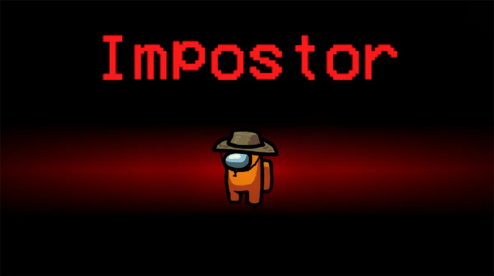
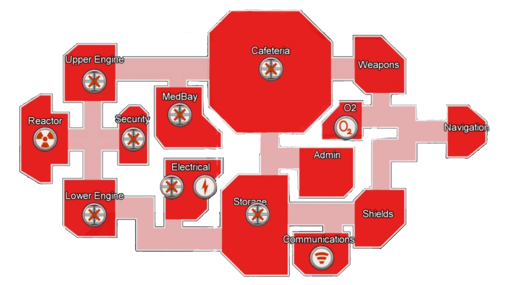

Sou impostor e agora?
Quando finalmente conseguir ser "O Impostor" é fundamental manter a calma, pense e cada jogada antes de executala.
Tenha em mente uma "Histórinha" que ira explicar seus motivos para para estar nos lugares, e mantenha-a coesa do começo ao fim.
Como impostor existem varios meios de se distrair os tripulantes, isso tanto para poder executar sem ser percebido, como para atrasar as "Tesks"
Portanto esquecer de fechar portas ou fazer sabotagens é o mesmo que centenciar a própria derrota.
Porem no entanto claro, se esses recursos forem utilizados de maneira inefeciente, sera dificil alcançar a vitória
Por isso é nescessario manter uma estrategia, para poder equilibrar o uso desses recursos.
Cada mapa tem seus pontos de sabotagem, e cada ponto suas peculiariedades ou seja é nescessario manter uma mente atenta para saber qual rumo sua estratégia deve tomar.
Se voçê como impostor seguir todas as dicas encontradas aqui sua probabilidade de vitória ira aumentar consideravelmente, dito isso, Boa sorte: Impostor